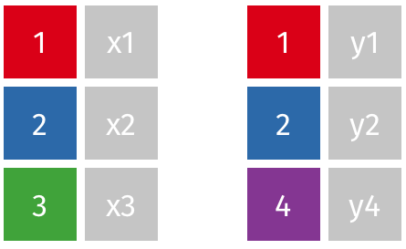
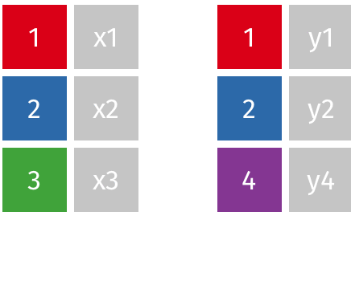

Una tabla (conjunto de datos) recuerda a una hoja de cálculo bien organizada
Igual que existen libros de hojas de cálculo, el análisis de datos raramente implica una única tabla
¿Por qué múltiples tablas? Es más eficiente almacenar y buscar “elementos similares” dentro de una tabla" y diferentes entre ellas.
Datos relacionales: múltiples tablas de datos con relaciones entre cada par de tablas
Las tablas se organizan/relacionan mendiante identificadores únicos llamados claves en un sistema de gestión de base de datos relacional
Universidad de Alicante, Curso 2020/21
Múltiples tablas de datos
Introducción con los datos nycflights13
library("tidyverse")
library("nycflights13")
- Varios conjuntos de datos sobre los vuelos (NY 2013); p.e., en la parte de vuelos
flights
flights %>% select(dep_time,arr_time,carrier:dest) %>% head(10)
- Algunas variables están “codificadas”: p.e., el nombre completo de la compañia se encuentra en
airlines
airlines %>% head()
- Ambas tablas contienen un identificador único clave (“key”):
carrier
Relaciones entre tablas

Tipos de Claves
Clave primaria: identifican de forma única cada observación en una tabla
En
planes, una sola variable es suficientetailnumberEn
weather, se necesitan múltiples variables: año, mes, día, hora y origen.
planes %>% count(tailnum) %>% filter(n > 1)
Clave externa: señala la clave primaria de otra tabla.
tailnumberes clave externa enflightsuna variable puede ser clave primaria y externa:
originenweatheryairports
Clave subrogada: la tabla carece de identificación única y se crea por número de fila
Tipos de relaciones entre tablas
Una clave primaria y la correspondiente clave externa en otra tabla forman una relación.
Pueden ser de cuatro tipos:
de-uno-a-muchos. Es el caso más frecuentes.
- Ej., cada vuelo tiene un avión, pero cada avión tiene muchos vuelos.
de-uno-a-uno. Puede verse como un caso especial de uno a muchos.
de-muchos-a-muchos.
- Ej., entre aerolíneas y aeropuertos: cada aerolínea vuela a muchos aeropuertos; cada aeropuerto alberga muchas aerolíneas.
de-muchos-a-uno
Operaciones con dos tablas
Uniones de mutación (“Mutating joins”): añade nuevas variables a una tabla desde filas coincidentes en otra.
Uniones de filtrado (“Filtering joins”): filtra las observaciones de una tabla basándose en si coinciden o no con una observación de la otra tabla.
Operaciones de conjunto (“Set operations”): combinan las observaciones en los conjuntos de datos como si fueran elementos de un conjunto.
Esta discusión asume que tenemos datos ordenados (tidy):
- las filas son observaciones
- las columnas son variables
Mutating joins
Los verbos de unión tiene dos argumentos obligatorios: las tablas que se unen
Una unión para añadir los nombres de las compañías a los datos de vuelo:
library("nycflights13")
flights2 <- flights %>%
select(year:day, hour, origin, dest, tailnum, carrier)
left_join(flights2, airlines)
- Con tuberías:
flights2 %>% left_join(airlines)
Argumento by: cómo se emparejan las tablas
- Por defecto se usan todas las variables que aparezcan en ambas tablas
flights2 %>% left_join(weather)
by = "a"para usar sólo algunas de las variables comunes.- P.e.,
flightsyplanestienen año, pero significan cosas diferentes; unimos solo portailnum
- P.e.,
flights2 %>% left_join(planes, by = "tailnum")
by = c ("b" = "d")para emparejar la variableben la primera tablaxcon la variableden la segunday.- P.e., el vuelo tiene un aeropuerto de origen y destino, ¿a cuál lo unimos?
flights2 %>% left_join(airports, c("dest" = "faa"))
flights2 %>% left_join(airports, c("origin" = "faa"))
Tipos de unión de mutuación
df1 <- tibble(clave = c(1:3), val_x = c("x1", "x2", "x3"))
df2 <- tibble(clave = c(1:2, 4), val_y = c("y1","y2","y3"))
inner_join(x, y)sólo incluye observaciones que coincidan enxyy.
df1 %>% inner_join(df2)

Tipos de unión de mutuación: uniones externas
left_join(x, y)right_join(x, y)full_join(x, y)Cuando una fila no coincide en una unión externa, las nuevas variables se rellenan como valores ausente con NA.

Tipos de unión de mutuación: left_join()
left_join(x, y)incluye todas las observaciones enx, coinciden o no con la dey.
df1 %>% left_join(df2)
- Usada habitualmente porque asegura que no pierda observaciones de su tabla primaria.
Tipos de unión de mutuación: right_join()
right_join(x, y)incluye todas las observaciones eny.Equivalente a
left_join (y, x)pero las columnas se ordenan de forma diferente.
df1 %>% right_join(df2) df2 %>% left_join(df1)
Tipos de unión de mutuación: full_join()
full_join()incluye todas las observaciones dexey.
df1 %>% full_join(df2)
Uniones de mutuación como conjuntos

- PERO un diagrama de Venn no puede mostrar lo que sucede cuando las claves no identifican una observación de manera única.
Claves duplicadas
Si una coincidencia no es única, se generan todas las combinaciones posibles (producto cartesiano) de las observaciones coincidentes
Solo una tabla tiene claves duplicadas.
- añade información adicional en una relación de uno a muchos.

df1dup <- tibble(clave = c(1, 2, 2, 1), val_x = c("x1", "x2", "x3", "x4"))
df2dup <- tibble(clave = c(1, 2), val_y = c("y1", "y2"))
df1dup %>% left_join(df2dup)
Claves duplicadas (cont.)
Ambas tablas tienen claves duplicadas.
- puede ser un error: las claves no identifican únicamente una observación en ninguna de las dos tablas
- igualmente, se obtienen todas las combinaciones posibles

df1dup2 <- tibble(clave = c(1, 2, 2, 3), val_x = c("x1", "x2", "x3", "x4"))
df2dup2 <- tibble(clave = c(1, 2, 2, 3), val_y = c("y1", "y2", "y3", "y4"))
df1dup2 %>% left_join(df2dup2)
Filtering joins: semi_join()
Las uniones de filtrado emparejan observaciones pero afectan a las observaciones, no a las variables
semi_join(x, y)mantiene todas las observaciones enxque coinciden eny.

df1 %>% semi_join(df2)
Filtering joins: anti_join()
anti_join(x, y)elimina todas las observaciones enxque coinciden eny.

df1 %>% anti_join(df2)
Filtering joins: claves duplicadas
En las uniones de filtrado sólo importa la existencia de una coincidencia, NO qué observación coincida.
Por tanto, NUNCA duplica filas

df1dup2 %>% semi_join(df2dup2)
Aplicaciones de anti_join() y semi_join()
anti_join()es útil para diagnosticar desajustes de uniones.Muchos vuelos en
nycflights13no tienentailnum
library("nycflights13")
flights %>%
anti_join(planes, by = "tailnum") %>%
count(tailnum, sort = TRUE)
- Si nos preocupa qué observaciones serán emparejadas, se debe empezar por un
semi_join()oanti_join()porque nunca duplican (solo eliminan)
Operaciones de conjunto
Esperan que las entradas
xeytengan las mismas variables, y tratan las observaciones como conjuntos.intersect(x, y): devuelve solo las observaciones (filas) tanto enxcomo enyunion(x, y): devuelte las observaciones únicas en ambas tablasxeysetdiff(x, y): devuelte las observaciones enx, pero no eny.
Operaciones de conjunto (cont.)
df1 <- tibble(x = 1:2, y = c(1, 1)) df2 <- tibble(x = c(1,1), y = 1:2)
- Las cuatro posibilidades son:
intersect(df1, df2) # inner_join(df1,df2) union(df1, df2) # full_join(df1,df2) # Notad que tenemos 3 filas, no 4 setdiff(df1, df2) # anti_join(df1,df2) setdiff(df2, df1) # anti_join(df2, df1)
Equivalencia con bases de datos SQL
| dplyr | SQL |
|---|---|
| inner_join() | SELECT * FROM x JOIN y ON x.a = y.a |
| left_join() | SELECT * FROM x LEFT JOIN y ON x.a = y.a |
| right_join() | SELECT * FROM x RIGHT JOIN y ON x.a = y.a |
| full_join() | SELECT * FROM x FULL JOIN y ON x.a = y.a |
| semi_join() | SELECT * FROM x WHERE EXISTS (SELECT 1 FROM y WHERE x.a = y.a) |
| anti_join() | SELECT * FROM x WHERE NOT EXISTS (SELECT 1 FROM y WHERE x.a = y.a) |
| intersect(x, y) | SELECT * FROM x INTERSECT SELECT * FROM y |
| union(x, y) | SELECT * FROM x UNION SELECT * FROM y |
| setdiff(x, y) | SELECT * FROM x EXCEPT SELECT * FROM y |
- SQL soporta más tipos de unión y puede trabajar con más de dos tablas.